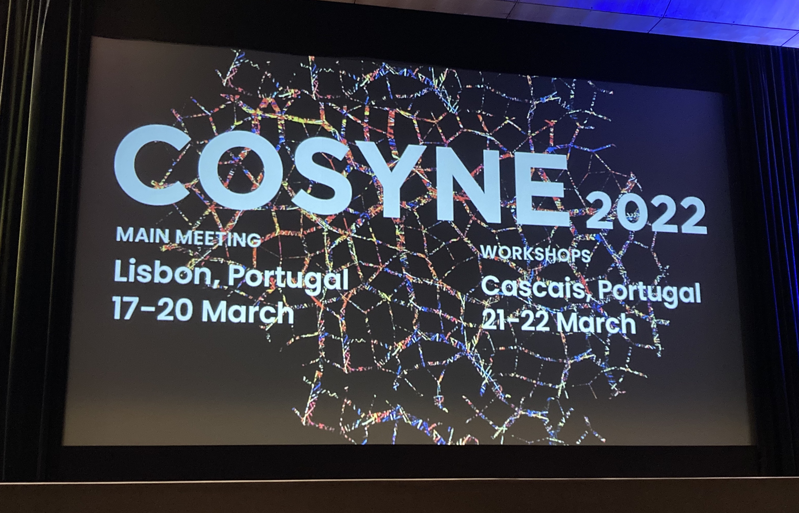

Resources - Cosyne 2022
March 2022

What a whirlwind! Cosyne 2022 was the first in person Cosyne since 2020; meaning that we had 2 years 😱 of science to catch up on! And people did not miss this opportunity to bring their science A-game 🤓 There was so much information, that even those of us who attended were likely unable to see everything we wanted to! With that, let me explain what this blog post aims to do, and who this blog post is for.
A brief aside: this blog post is NOT the trends that were observed at Cosyne. If you are looking for that go to the companion post: Trends in Computational Neuroscience: Cosyne 2022.
Blog post aims: This blog post is a collection of all the fabulous resources that were generated and discussed during the conference. It is a quick and easy way to go back and catch what you missed, or if you didn't attend to still take part in Cosyne 2022! I hope this post makes computational neuroscience more accesible for all.
Who is this blog post for? This blog post is for anyone and everyone who wants to learn more about computational neuroscience! This includes (1) people that came to Cosyne and (2) those that couldn't make it; pretty all encompasing I hope 😅
Let's get started! I have set up this blog post so that you can re-live or live Cosyne 2022 at three discrete levels of depth. Please feel empowered to choose your own experience. In order of increasing involvement:
If you make it to the end of this post there is a Cosyne 2022 fun fact that most of you likely don't know, and that I guarantee your scientist mind will enjoy 🤓 Thanks for sticking around - happy learning!
| Recording 1 | Recording 2 | Github | Website |
Session 1 - Behavior and the Brain
| Live-Thread | Recording |
| Live-Thread | List of Poster Titles | World Wide Neuro Posters |
| Live-Thread | Recording |
| Live-Thread | Recording |
| Live-Thread | Recording |
| Recording |
| Live-Thread |
Poster Session 2
| Live-Thread | List of Poster Titles | World Wide Neuro Posters |
| Live-Thread | Recording |
| Live-Thread | Recording |
| Live-Thread | Imbizo Africa | Neuromatch Academy |
Session 8 - Immune Responses and the Brain
| Recording |
Session 9 - Navigating Space and Time
| Recording |
| Live-Thread | List of Poster Titles | World Wide Neuro Posters |
| Live-Thread | Recording |
| Live-Thread | Recording |
| Live-Thread | Recording |
| Live-Thread | Recording |
| Live-Thread | Workshop Abstracts |
| Live-Thread | Workshop Abstracts |
Tracks spanning two days
You made it to the end, 🙏 high five! I am a woman of my word, so here is your well earned fun fact! If you read the challenge in my companion piece: Trends in Computational Neuroscience: Cosyne 2022, I've hopefully instilled the importance of contrasting what the organizers wanted us to take from Cosyne (through their organization of talks) to what we actually took away from Cosyne.
Now, all of the sessions had a clear theme, but did you ever wonder what the theme of the poster sessions were? They were simply named: Poster Session 1, Poster Session 2, Poster Session 3. But there must have been some structure! I was certainly wondering - so I asked Tim Vogels (one of our valiant organizers), and he directed me to the poster session mastermind Panos Bozelos.
I had a chance to sit down with Panos and he told me all the wonderful details of how he used natural language processing (NLP) to take us on a poster session journey! Do you have a guess how he did it? Here's a hint: did you find yourself visiting the same poster board number every night? 🤔
In brief, he used a 20GB 😯 NLP model trained on pubmed to find the 3 most similar posters. He ran the model with 35 different initializations to find stable groupings of three posters. Then each poster was given the same poster board number at session 1, 2, or 3! Panos did a great job of creating a spatio-temporal poster experience that I bet rivals most conferece poster session organizations!
Thanks so much for making it to the end of this post! I hope the content as well as the fun fact helped you immerse yourself into Cosyne 2022 and computational neuroscience! If you enjoyed this post, please check out its companion piece: Trends in Computational Neuroscience: Cosyne 2022. In that post I will share my opinions on where we stand as a field and more importantly where we are going!
A brief aside: this blog post is NOT the trends that were observed at Cosyne. If you are looking for that go to the companion post: Trends in Computational Neuroscience: Cosyne 2022.
Blog post aims: This blog post is a collection of all the fabulous resources that were generated and discussed during the conference. It is a quick and easy way to go back and catch what you missed, or if you didn't attend to still take part in Cosyne 2022! I hope this post makes computational neuroscience more accesible for all.
Who is this blog post for? This blog post is for anyone and everyone who wants to learn more about computational neuroscience! This includes (1) people that came to Cosyne and (2) those that couldn't make it; pretty all encompasing I hope 😅
Let's get started! I have set up this blog post so that you can re-live or live Cosyne 2022 at three discrete levels of depth. Please feel empowered to choose your own experience. In order of increasing involvement:
- Read the session and talk titles below.
This will give you the gist of topics at Cosyne 2022. There is an important reason why I wanted to only see the talk titles without authors, institutions, etc. in one place. If you want to know why and more importantly be challenged visit the companion piece: Trends in Computational Neuroscience: Cosyne 2022. - Click on the "Live-Thread".
This will give you a little bit more depth because it includes (1) the talk and discussion highlights and (2) the key slides from each of the talks as I was listening live! Hopefully you'll get a real feel for the science without having to listen to the whole talk! - Click on the "Recording".
This gives you the most accurate account of what happened, but is of course a time investment!
If you make it to the end of this post there is a Cosyne 2022 fun fact that most of you likely don't know, and that I guarantee your scientist mind will enjoy 🤓 Thanks for sticking around - happy learning!
Thursday 3/17
Tutorial - Spiking Neural Networks| Recording 1 | Recording 2 | Github | Website |
Session 1 - Behavior and the Brain
| Live-Thread | Recording |
- Dopamine specifies the structure of spontaneous behavior
- Interpretable behavioral features have conserved neural representations across mice
- Operative Dimensions in High-Dimensional Connectiivty of Recurrent Neural Networks
- Joint Coding of Visual Input and eye/head position of freely moving mice
| Live-Thread | List of Poster Titles | World Wide Neuro Posters |
Friday 3/18
Session 2 - Action Selection Learning and Dopamine| Live-Thread | Recording |
- From plans to outcomes: Continuous representations of actions in primate prefrontal cortex
- Distinct dynamics in prohection-specific midbrain dopamine populations for learning and motivation
- Computational strategies and neural correlates of probabilistic reversal learning in mice
| Live-Thread | Recording |
- What can birds and rodents tell us about human speech?
- A new tool for automated annotation of complex birdsong reveals dynamics of canary syntax rules
- Linking tonic dopamine and biased value predictions in a biologically inspired reinforcement learning model
- Integrating deep reinforcement learning agents with the C. elegans nervous system
- Dynamical systems analysis reveals a novel hypothalamic encoding of state in nodes controlling social behavior
| Live-Thread | Recording |
- To remap or reregister, that is the question: how hippocampus represents different spaces
- Isolating the role of synaptic plasticity in hippocampal place codes
- A hierarchical representation of sequences in human entorhinal cortex
- Neocortical feature codes drive memory recall
| Recording |
- (De-) Synchronizing neural networks with homoclinic action potentials
- Basal Ganglia feedback loops as possible candidates for generation of beta osciallation
- Neocortical long-range inhibitory neurons coordinate state-dependent network synchronization
- Metastable circuit dynamics explains optimal coding of auditory stimuli at moderate arousal
| Live-Thread |
Poster Session 2
| Live-Thread | List of Poster Titles | World Wide Neuro Posters |
Saturday 3/19
Session 6 - Population Codes and Connectivity| Live-Thread | Recording |
- Coordinated spike coding
- Large retinal populations are collectively organized to efficiently process natural scenes
- A two-way luminance gain control in the fly brain ensure luminance invariance in dynamic vision
- Direct measurement of whole-brain functional connectivity in C. elegans
| Live-Thread | Recording |
- Exploring ephaptic coupling in white matter
- Optogenetic mapping of circuit connectivity in the motor cortex during goal-directed behavior
- Invariant neural subspaces maintained by feedback modulation
- Dynamic causal communication channels between neocortical areas
| Live-Thread | Imbizo Africa | Neuromatch Academy |
Session 8 - Immune Responses and the Brain
| Recording |
- A physiological take on the mind-body question
Session 9 - Navigating Space and Time
| Recording |
- A navigational network hardwired for rapid flexibility
- The secret of Bayesian lives of ring attractor networks
- A hindbrain ring attractor network that integrates heading direction in the larval zebrafish
- A reservoir of timescales in random neural networks
| Live-Thread | List of Poster Titles | World Wide Neuro Posters |
Sunday 3/20
Session 10 - Working Memory, Decision Making, and Value| Live-Thread | Recording |
- Neural circuits of visuospatial working memory
- Orbitofrontal cortex is required to infer hidden task states during value-based decision making
- Reorganizing cortical learning: a cholinergic adaptive credit assignment model
- Integrating information and reward into subjective value: humans, monkeys, and the lateral habenula
| Live-Thread | Recording |
- Brain-body interactions for rapid and flexible control of walking in Drosophila
- The emergence of fixed points in interlimb coordination underlies the learning of novel gaits in mice
- Differential encoding of innate and learned behaviors in the sensorimotor striatum
- Deep neural network modeling of a visually-guided social behavior
| Live-Thread | Recording |
- The synaptic origins and functional role of diverse cortical responses during behavior
- Correlation-based motion detectors in olfaction enable turbulent plume navigation
- A temporal context model of spatial memory
- Symmetries and asymmetries in the neural coding of space
| Live-Thread | Recording |
Monday 3/21
Workshops - Day 1| Live-Thread | Workshop Abstracts |
Tracks spanning two days
- Evolution of memory representations and engrams across time and experience
- Why is everything everywhere?
- Brain-Score and beyond: confronting brain-like ANNs with neuroscientific data
- Illuminating neural computation through perturbations and adaptive experimental designs
- The what, how and when of learning: How do artificial and biological agents approach the problem of learning, and how can approaches from one inform the other?
- Mechanisms, functions, and methods for diversity of neuronal and network timescales
- Representations and failure modes: computational psychiatry as a novel approach to neural processing in mental health
- The neural codes of abstraction and the link to behavioral generalization
- Linking phenomena across levels of analysis: The need for a new multi-level reverse-engineering toolkit
Tuesday 3/22
Workshops - Day 2| Live-Thread | Workshop Abstracts |
Tracks spanning two days
- Evolution of memory representations and engrams across time and experience
- Why is everything everywhere?
- Brain-Score and beyond: confronting brain-like ANNs with neuroscientific data
- Illuminating neural computation through perturbations and adaptive experimental designs
- The what, how and when of learning: How do artificial and biological agents approach the problem of learning, and how can approaches from one inform the other?
- Geometry is all you need? The importance of representational geometry across brain areas and cognitive processes
- Understanding Variability in Neural Computations and Behaviors
- Emerging roles of co-release of neuromodulators in brain function
- Moveo ergo cogito: motor-rooted approaches to spatial cognition
You made it to the end, 🙏 high five! I am a woman of my word, so here is your well earned fun fact! If you read the challenge in my companion piece: Trends in Computational Neuroscience: Cosyne 2022, I've hopefully instilled the importance of contrasting what the organizers wanted us to take from Cosyne (through their organization of talks) to what we actually took away from Cosyne.
Now, all of the sessions had a clear theme, but did you ever wonder what the theme of the poster sessions were? They were simply named: Poster Session 1, Poster Session 2, Poster Session 3. But there must have been some structure! I was certainly wondering - so I asked Tim Vogels (one of our valiant organizers), and he directed me to the poster session mastermind Panos Bozelos.
I had a chance to sit down with Panos and he told me all the wonderful details of how he used natural language processing (NLP) to take us on a poster session journey! Do you have a guess how he did it? Here's a hint: did you find yourself visiting the same poster board number every night? 🤔
In brief, he used a 20GB 😯 NLP model trained on pubmed to find the 3 most similar posters. He ran the model with 35 different initializations to find stable groupings of three posters. Then each poster was given the same poster board number at session 1, 2, or 3! Panos did a great job of creating a spatio-temporal poster experience that I bet rivals most conferece poster session organizations!
Thanks so much for making it to the end of this post! I hope the content as well as the fun fact helped you immerse yourself into Cosyne 2022 and computational neuroscience! If you enjoyed this post, please check out its companion piece: Trends in Computational Neuroscience: Cosyne 2022. In that post I will share my opinions on where we stand as a field and more importantly where we are going!